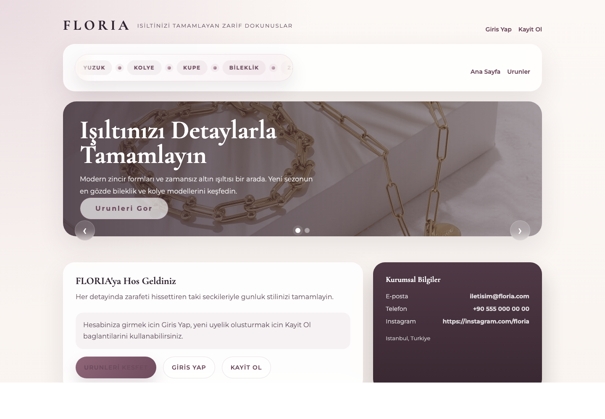
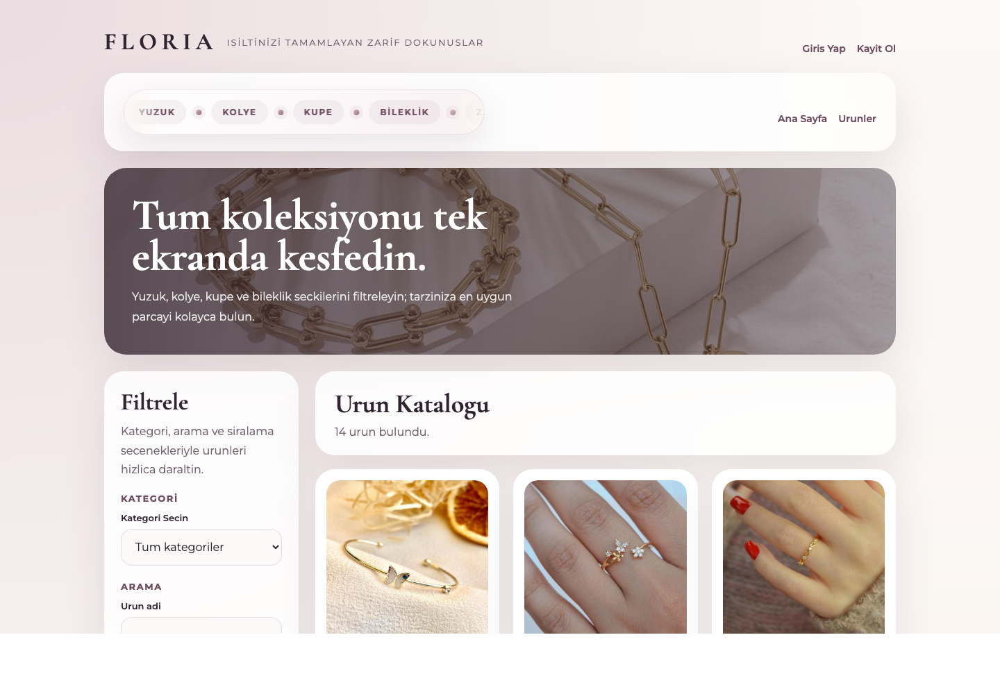
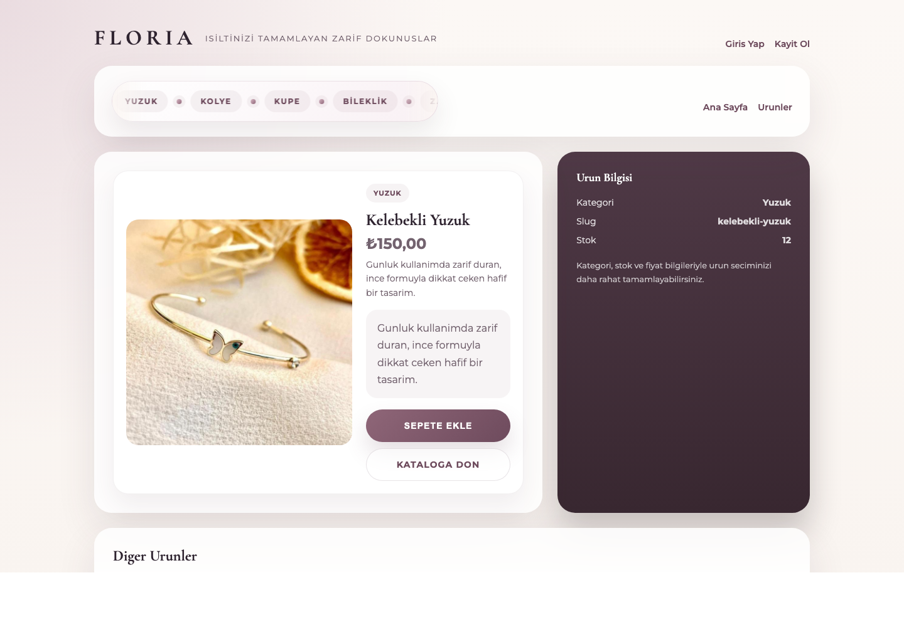
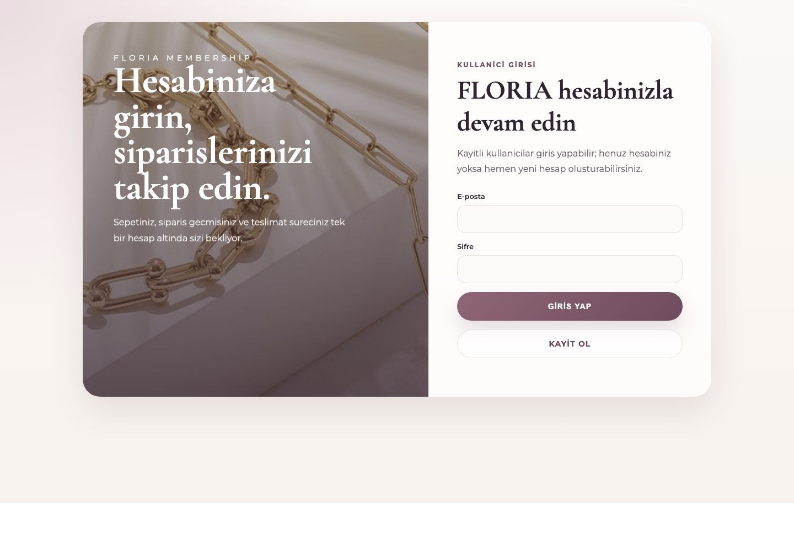
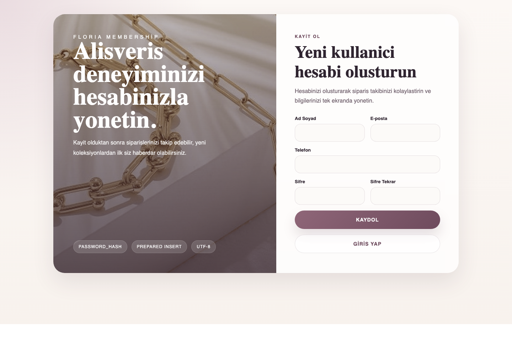
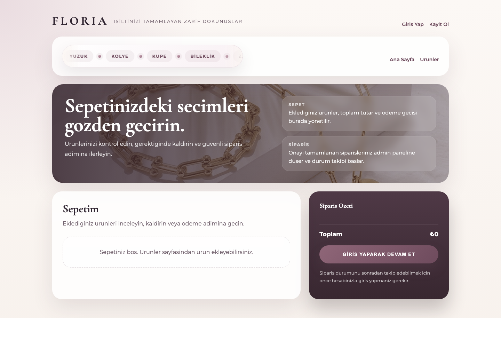
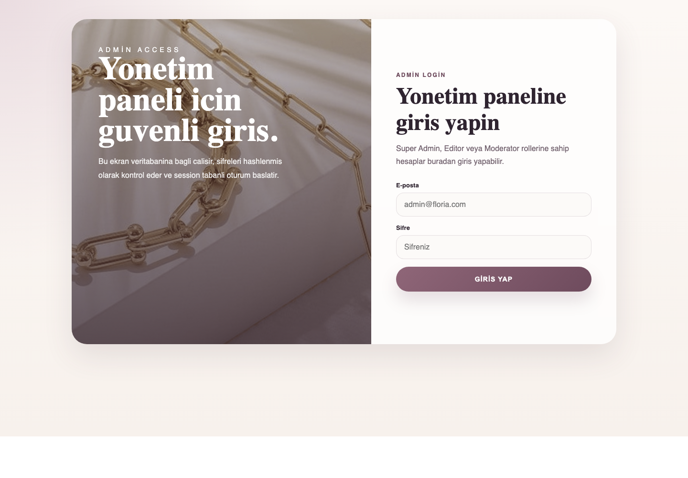
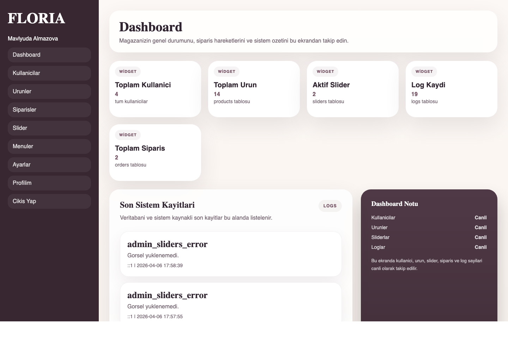
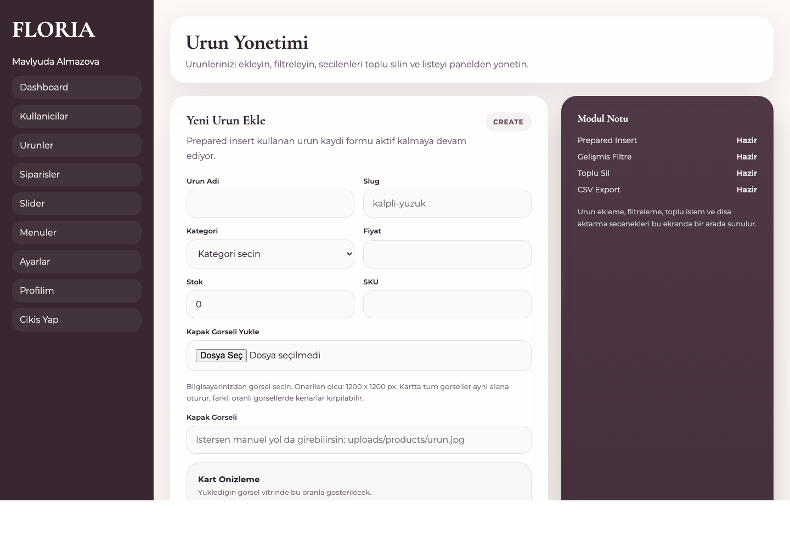
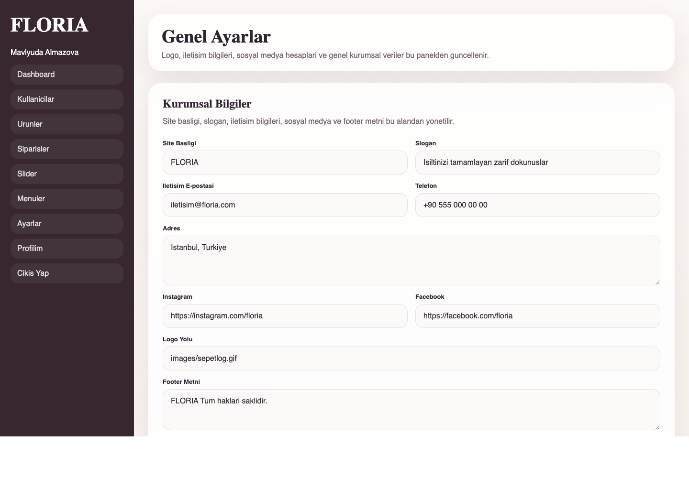

FLORIA projesi, PHP, MySQL ve PDO kullanılarak geliştirilen dinamik bir takı e-ticaret sitesidir. Projede kullanıcı arayüzü, üyelik sistemi, ürün listeleme, sepet, sipariş, admin paneli, rol-yetki sistemi, slider yönetimi, menü yönetimi, ayarlar yönetimi, raporlama ve loglama modülleri bulunmaktadır.
| Madde | Projede Karşılığı | İlgili Dosyalar |
|---|---|---|
| Responsive kullanıcı arayüzü ve admin paneli | Public site ve admin paneli mobil, tablet ve masaüstü ekranlara uyumlu olarak tasarlandı. | styles.css, public/*, admin/* |
| Normalize veritabanı ve foreign key ilişkileri | Roller, yetkiler, kullanıcılar, ürünler, kategoriler, siparişler, menüler, sliderlar, ayarlar ve loglar ayrı tablolarla kuruldu. | sql/floria_schema.sql |
| Prepared Statements | Veritabanı sorguları PDO prepared statements ile yazıldı. | app/repositories/*, app/config/database.php |
| Türkçe karakter desteği | Veritabanında utf8mb4, HTML tarafında UTF-8 ve çıktı güvenliği için htmlspecialchars kullanıldı. | sql/floria_schema.sql, app/views/layouts/*, app/helpers/functions.php |
| Şifre hashleme | Şifreler açık metin saklanmaz; password_hash ve password_verify kullanılır. | public/register.php, public/login.php, admin/login.php, admin/setup.php |
| Modüler mimari | Config, helper, repository, layout ve component dosyaları ayrıldı. | app/config, app/helpers, app/repositories, app/views |
| Rol ve yetki sistemi | Super Admin, Editor, Moderator ve Customer rolleri veritabanı kontrollü permission sistemiyle yönetilir. | roles, permissions, role_permissions tabloları, app/helpers/auth.php |
| Admin profil güncelleme | Admin kullanıcı kendi ad, e-posta, telefon ve şifre bilgisini güncelleyebilir. | admin/profile.php |
| Oturum ve yetki kontrolü | Admin sayfalarında giriş ve permission kontrolü yapılır. | app/helpers/auth.php, admin/* |
| Veritabanından gelen içerik | Ürünler, kategoriler, slider, menü ve site ayarları veritabanından çekilir. | public/index.php, public/products.php, app/repositories/* |
| Dinamik slider | Slider görseli, başlığı, açıklaması, linki ve sırası admin panelden yönetilir. | admin/sliders.php, app/repositories/SliderRepository.php |
| Dinamik menü | Menü başlıkları, linkleri ve sıralaması admin panelden yönetilir. | admin/menus.php, app/repositories/MenuRepository.php |
| Merkezi ayarlar | Site başlığı, slogan, iletişim ve sosyal medya bilgileri ayarlar ekranından güncellenir. | admin/settings.php, app/repositories/SettingRepository.php |
| Dashboard widgetları | Toplam kullanıcı, ürün, sipariş, slider ve log sayıları dashboard üzerinde gösterilir. | admin/index.php, app/repositories/DashboardRepository.php |
| Filtreleme ve sıralama | Ürün listeleme ekranlarında arama, kategori, durum ve sıralama seçenekleri bulunur. | public/products.php, admin/products.php |
| Çoklu seçim ve toplu silme | Ürün, menü ve slider kayıtlarında çoklu seçim ile toplu silme yapılabilir. | admin/products.php, admin/menus.php, admin/sliders.php |
| PDF / CSV dışa aktarma | Ürün, kullanıcı ve sipariş verileri CSV ve PDF formatlarında dışa aktarılabilir. | admin/export_*.php, app/helpers/pdf.php |
| Loglama | Veritabanı hataları, yetkisiz erişimler ve kritik sistem hataları dosyaya ve uygun durumda logs tablosuna kaydedilir. | app/helpers/logger.php, storage/logs/system.log, logs tablosu |
| Kullanıcı dostu mesajlar | Kayıt, giriş, silme, sipariş ve hata durumlarında anlaşılır uyarı mesajları gösterilir. | app/helpers/functions.php, public/*, admin/* |
Ana Sayfa

Ürün Listeleme ve Filtreleme

Ürün Detay Sayfası

Kullanıcı Giriş Sayfası

Kullanıcı Kayıt Sayfası

Sepet Sayfası

Admin Giriş Sayfası

Admin Dashboard

Ürün Yönetimi

Slider Yönetimi
Merkezi Ayarlar

FLORIA projesi, Web Programlama 2 proje kriterlerinde istenen kullanıcı arayüzü, admin paneli, veritabanı ilişkileri, güvenli sorgu yapısı, şifre hashleme, rol-yetki kontrolü, dinamik içerik yönetimi, raporlama, loglama ve kullanıcı bilgilendirme özelliklerini içerecek şekilde tamamlanmıştır.